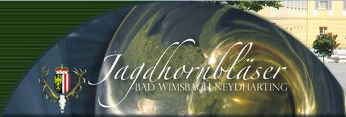
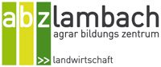
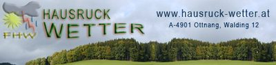

Zum Inhalt springen
kastenhuber
.info
Aktuelles
Über uns
Freizeit
Versuchsergebnisse
Fachartikel
Fotos
Partner/Links
Kontakt
Netzwerk
Partner - Links

jagdhorn.at
Jagdhornbläsergruppe Bad Wimsbach-Neydharting
landwirt.com
Ackerbau auf landwirt.com
baes.gv.at
Bundesamt für Ernährungssicherheit

abzlambach.at
Landwirtschaftliche Fachschule Lambach

hausruck-wetter.at
Hausruckwetter